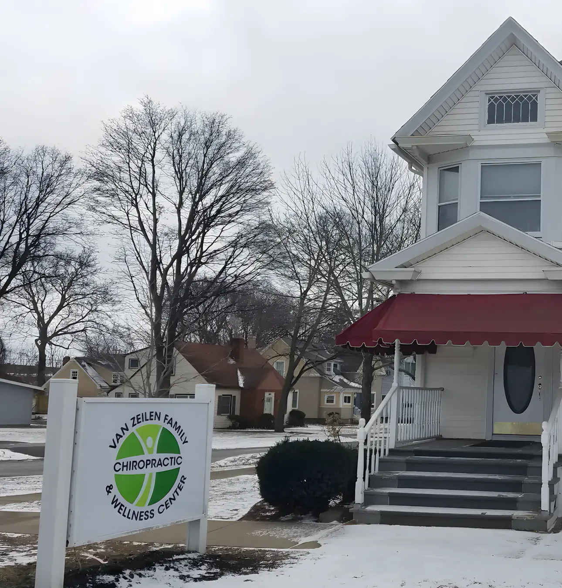

History and an exam by hand
We start by listening. Then Dr. Kris checks your spine by hand (palpation): spinal position, curves and muscle tone, looking for where the spine and nerves may be involved.

Dr. Kris Van Zeilen's practice in the white house on Ridge Road West, Rochester. We see newborns, athletes, grandparents and everyone in between, and we explain everything before care starts.
5.0 · 46 Google reviews1367 Ridge Road West, Rochester, NY 14615
Mon–Wed 8–12:30 & 2:30–6 · Thu 3–7 · Sat 9–11
“Dr Kris takes the time to actually listen to your concerns rather than just rushing through an adjustment.”
Dr. Kris Van ZeilenDoctor of Chiropractic, owner
There's no one size fits all here. Every new patient starts with a full history, an exam by hand and, when it's right for you, x-rays taken in our office. We explain what we found before we adjust anything.
Four parts, spread over two visits. Nothing is rushed, and nothing starts before you understand it.
We start by listening. Then Dr. Kris checks your spine by hand (palpation): spinal position, curves and muscle tone, looking for where the spine and nerves may be involved.
A thermal scan reads small heat differences along your spine, side to side and level to level. A surface EMG scan measures the electrical activity of the muscles along it.
Together they give us a baseline, so later we can measure progress instead of guessing from how you feel on a given day.
Depending on your age and situation. Most patients get three spinal x-rays at the start of care. We don't take them during pregnancy, on most children, or if you already have recent usable ones.
A few days later, a visit of up to an hour, set apart from regular patient hours. We go through your x-rays and scans, give you a care plan, and answer every question before your first adjustment.
Not sure chiropractic is right for what you have? Call and ask Dr. Kris before you book.
Ask Dr. KrisDr.
Kris
Your chiropractor, from the first exam to every adjustment.
Doctor of Chiropractic
Rochester native, Life University graduate. Has treated professional, college and amateur athletes from the US, Canada, Europe, New Zealand, Australia and South Africa.
Office Manager
Athletic training and kinesiology degree from the College at Brockport, PTA degree from Genesee Community College, and years as a certified athletic trainer.

Chiropractic Assistant
Usually the first person you meet. Over 8 years at the front of medical offices and 3 years as a Licensed Massage Therapist.
5.0 from 46 reviews on Google
I have been seeing Dr. Kris Van Zeilen for 8 years… He is not a mass manipulator. He does X-Rays right in his office before he even touches you. He uses a torque technique tool that is very gentle.
From the moment you walk in, the atmosphere is welcoming and professional… After dealing with lingering back & neck issues for months, I’ve experienced genuine relief and feel so much better in my day-to-day life.
I’ve personally been a patient here for about three years so when my newborn was having difficulty with his range of motion in his neck we brought him to see Dr. Kris. After one visit he was turning his head more and sleeping towards the opposite side!
Dr. Kris takes a holistic approach to overall wellness. I’ve been getting adjustments for over a year and my lower back pain has diminished. It’s a friendly welcoming atmosphere.
Anything else, call us on 585-227-8290 during office hours.
Call 585-227-8290 during office hours, or email info@vzfchiro.com and tell us whether you'd like a call or an email back. Please don't put medical details in an email.
Yes. The New Patient Form, Informed Consent and Notice of Privacy are on our forms page. There's a separate pediatric form for children 13 and younger.
It depends on your age and situation. Most patients have three spinal x-rays at the start of care, taken here in the office. We don't take them during pregnancy, on most children, or if you have recent usable spinal x-rays.
Yes, from newborns up. Children get gentle, light-force techniques suited to their age. A newborn is treated very differently from a 20-year-old athlete.
Up to an hour. It's booked a few days after your first visit, at set times away from regular patient hours, and our staff will schedule it with you.
1367 Ridge Road West, Rochester, NY 14615
The white Victorian house with the red awning and our green sign out front. A ramp runs up to the porch on the right.
| Monday | 8:00am – 12:30pm 2:30 – 6:00pm |
| Tuesday | 8:00am – 12:30pm 2:30 – 6:00pm |
| Wednesday | 8:00am – 12:30pm 2:30 – 6:00pm |
| Thursday | 3:00 – 7:00pm |
| Friday | Closed |
| Saturday | 9:00 – 11:00am |
| Sunday | Closed |
Ridge Road West, Rochester, NY 14615